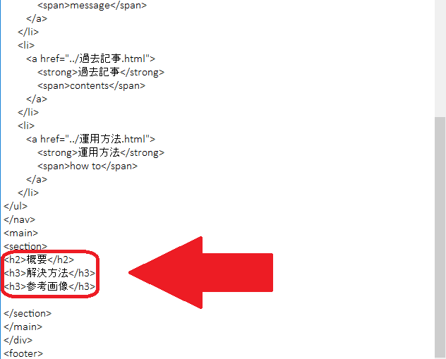
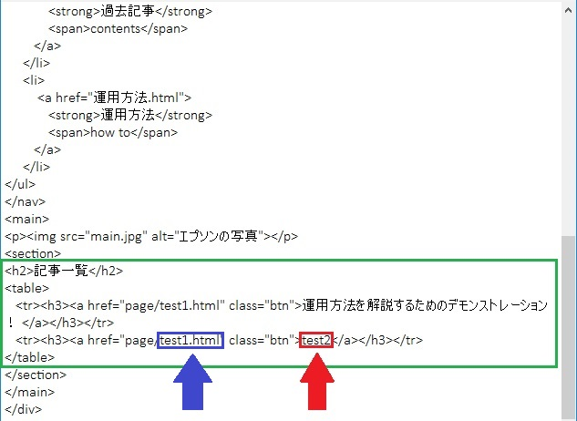

<!DOCTYPE html>
<html>
<head>
<meta charset="utf-8">
<meta name="author" content="Takahiro.Mori">
<meta name="description" content="EPSONの仙台事業所について">
<title>EPSON</title>
<link href="style.css" media="all" rel="stylesheet">
<link href="https://fonts.googleapis.com/css?family=Josefin+Slab" rel="stylesheet">
</html>
<body>
    <div id="wrap">
        <header id="header">
           <div class="inner clearfix">
     
              <h1 id="logo"><span>■</span>▲<span>チ</span>ーム！！</h1>
           <div id="photo">
                    
              </div>		
           </div><!-- /.inner-->
        
        </header><!-- /#header-->
<div>
    <nav id="gnav">
        <ul class="inner">
            <li class="active">
                <a href="index.html">
                    <strong>ホーム</strong><br>home
                </a>
            </li>
            <li>
                <a href="index-mes.html">
                    <strong>代表挨拶</strong><br>message
                </a>
            </li>
            <li>
                <a href="index-con.html">				<strong>過去記事</strong><br>contents
                </a>
            </li>
            <li>
                <a href="index-how.html">
                    <strong>運用方法</strong><br>how to
                </a>
            </li>
            <li>
                <a href="index-dec.html">
                    <strong>登録フォーム</strong><br>decoration
                </a>
            </li>
        </ul>
    </nav>
<main>
<div id="contents">
<section>
<h2>このサイトの使い方</h2>
<h3>STEP1:必要事項の立案</h3>
<p>初めに解析を行って得られた内容を用紙などに記載しまとめて下さい。<br>
内容をまとめるフォーマットを用意しておりますので、そちらを参考に考えてみて下さい。</p>
<h3>STEP2:必要事項をメモ帳に入力</h3>
<p>続いて、STEP1で作成したフォーマットを元にHTMLのテキストを作成します。<br>
「page」というフォルダの中にHTMLファイルを作成しておきました。<br>
そのフォルダの中の「記事 原本」というデータを開いてください。<br>
<br>
そのデータを開くと以下のような画面が表示されます。<br>
<p></p>
その中に「概要」、「解決方法」、「参考画像」がh2とh3で挟まれている場所を見つけて下さい。
<br>
そのあとにSTEP1で考えた内容を追加して下さい。
以下はその例です。
<p></p>

ちなみに、こちらの反映結果は以下のページを参照ください。<br>
<a href="page/test1.html">運用方法を解説するためのデモンストレーション！</a>

<h3>STEP3:必要事項をメモ帳に保存</h3>
そして入力が完成したら保存をします。<br>
保存するうえでの注意点は2つです。<br>
以下の画像をご覧ください。
<p></p>
<p>
     一つ目はファイル名の後に「○○.thml」と変更すること<br>
     二つ目は文字コードを「UTF-8」に変更すること
</p>
以上です。</p>
<h3>STEP4:画像のファイル名の保存</h3>
<p>続いて画像の保存です。<br>
ここでの注意点は保存場所だけです。<br>
<strong>保存場所は必ず「pictures」というフォルダの中に保存してください。</strong><br>
ひとつ上の階層に保存してしまうと上手く反映されない原因になります。</p>
<p></p>

<h3>STEP5:「過去記事」ページの編集</h3>
<p>これで最後の仕上げです。<br>
「過去記事.html」のテキストを開いていただくと、以下の画像が表示されます。
<p></p>

上の画像の「test2」のところを編集すると、ページ上に表示される結果に上手く反映されます。<br>
また、「test1.html」のところには、表示させるテキストのファイル名を入力してください。<br>
<br>
リンクを追加する際には、下の画像をご覧ください。
<p></p>
「table」と「/table」で囲っている中に画像のようにコピーを入れて頂ければ上手く反映されます。<br>
反映の結果は以下のリンクのようになります。
<p><a href="過去記事.html">画像の反映結果を確認する！</a></p>
「test2」と「test1.html」以外のところは編集しないようお願いします。
<h3>STEP6:実際に反映されているか確認</h3>
<p>お疲れさまでした。<br>
編集は以上です。<br>
最後にしっかりと結果が反映されているか確認をして下さい。<br>
編集結果が上手く行われていない場合は前のSTEPに戻ってコードの編集をしてみて下さい。</p>
</div>
</section>
</main>
</div>
<footer id ="footer">
	<div class="inner">
		<ul id="flink">
			<li>ホーム</li>
			<li>代表挨拶</li>
			<li>過去記事</li>
			<li>運用方法</li>
			<li>登録フォーム</li>
		</ul>
	<p id="copyright"><small>Copyraight　2019　Takahiro.Mori</small>
	</p>
	</div>
</footer>
</body>
</html>
